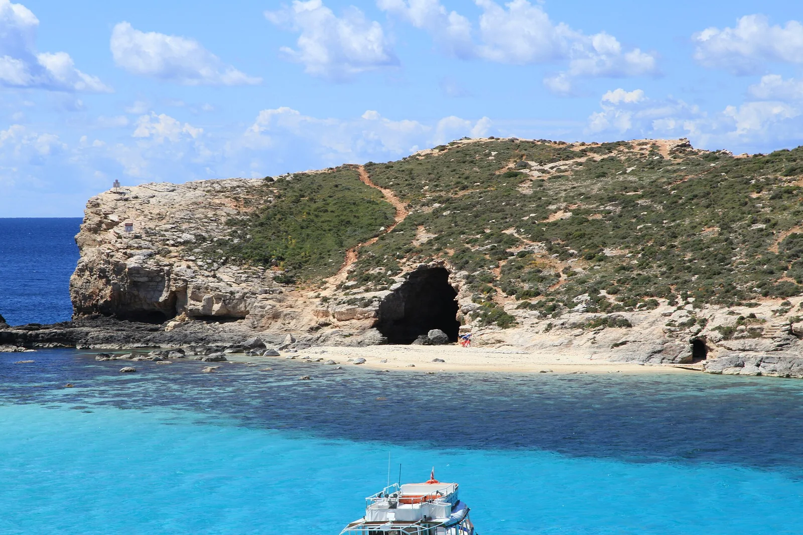

Blue Lagoon
Comino, Malte · snorkeling, baignade

Lagon d’un bleu irréel entre Comino et l’îlot de Cominotto. Un fond de sable blanc et une eau très claire pour le snorkeling.
- Lieu
- Comino, Malte
- Niveau
- Débutant
- Activités
- snorkeling, baignade
- Type d'eau
- Mer / océan
- Coordonnées
- 36.01, 14.32 (position approximative du secteur)
Dangers à connaître
- Très fréquenté par les bateaux.
- Coup de soleil possible sans protection.
Le conseil d'Ocean Buddy
L’accès est limité par créneaux en haute saison : réserve et arrive au premier bateau.
Ouvrir dans Ocean Buddy Télécharger sur l'App Store
Source : Fiche Ocean Buddy · septembre 2026 · à vérifier localement.